read_project_xlsx <- function(paths, fallback = NULL) {
for (path in paths) {
if (file.exists(path)) {
return(read_excel(path))
}
}
if (!is.null(fallback)) {
return(fallback)
}
stop("None of these files exist: ", paste(paths, collapse = ", "))
}
mode_value <- function(x) {
x <- x[!is.na(x)]
if (!length(x)) return(NA)
ux <- unique(x)
ux[which.max(tabulate(match(x, ux)))]
}
nrmse_calc <- function(actual, pred) {
actual <- as.numeric(actual)
pred <- as.numeric(pred)
rng <- diff(range(actual, na.rm = TRUE))
if (is.na(rng) || rng == 0) return(NA_real_)
sqrt(mean((actual - pred)^2, na.rm = TRUE)) / rng
}
metric_row <- function(model, obs, pred) {
tibble(
model = model,
rmse = caret::RMSE(pred, obs),
mae = caret::MAE(pred, obs),
r2 = caret::R2(pred, obs)
)
}
top_abs_coef <- function(coef_obj, n = 10) {
coef_df <- as.matrix(coef_obj)
tibble(
term = rownames(coef_df),
estimate = as.numeric(coef_df[, 1])
) |>
filter(term != "(Intercept)") |>
mutate(abs_estimate = abs(estimate)) |>
arrange(desc(abs_estimate)) |>
slice_head(n = n) |>
select(term, estimate)
}
plot_obs_pred <- function(df, title) {
ggplot(df, aes(x = observed, y = predicted)) +
geom_point(alpha = 0.5) +
geom_abline(
slope = 1,
intercept = 0,
linetype = 2,
linewidth = 0.35,
color = "gray45"
) +
labs(title = title, x = "Observed", y = "Predicted")
}This report combines the strongest parts of both earlier drafts into one full modeling journey for the ABC beverage process data. The cleaning section emphasizes why imputation was preferred over simple exclusion, while the modeling section starts with a baseline linear model and moves through ridge, lasso, PLS, random forest, and gradient boosting. All plots use a low-ink style so the data carry the visual weight.
student_raw <- read_project_xlsx(
c("Project2/StudentData.xlsx", "StudentData.xlsx")
)
student_data <- student_raw |> rename_with(make.names)
eval_paths <- c(
"Project2/StudentEvaluation.xlsx",
"Project2/StudentEvaluation (1).xlsx",
"StudentEvaluation.xlsx",
"StudentEvaluation (1).xlsx"
)
evaluation_raw <- read_project_xlsx(eval_paths, fallback = student_raw)
evaluation_data <- evaluation_raw |> rename_with(make.names)
data_overview <- tibble(
rows = nrow(student_data),
cols = ncol(student_data),
complete_rows = sum(complete.cases(student_data)),
complete_share = round(100 * complete_rows / rows, 1)
)
data_overview |> kable()| rows | cols | complete_rows | complete_share |
|---|---|---|---|
| 2571 | 33 | 2038 | 79.3 |
str(student_data)## tibble [2,571 x 33] (S3: tbl_df/tbl/data.frame)
## $ Brand.Code : chr [1:2571] "B" "A" "B" "A" ...
## $ Carb.Volume : num [1:2571] 5.34 5.43 5.29 5.44 5.49 ...
## $ Fill.Ounces : num [1:2571] 24 24 24.1 24 24.3 ...
## $ PC.Volume : num [1:2571] 0.263 0.239 0.263 0.293 0.111 ...
## $ Carb.Pressure : num [1:2571] 68.2 68.4 70.8 63 67.2 66.6 64.2 67.6 64.2 72 ...
## $ Carb.Temp : num [1:2571] 141 140 145 133 137 ...
## $ PSC : num [1:2571] 0.104 0.124 0.09 NA 0.026 0.09 0.128 0.154 0.132 0.014 ...
## $ PSC.Fill : num [1:2571] 0.26 0.22 0.34 0.42 0.16 ...
## $ PSC.CO2 : num [1:2571] 0.04 0.04 0.16 0.04 0.12 ...
## $ Mnf.Flow : num [1:2571] -100 -100 -100 -100 -100 -100 -100 -100 -100 -100 ...
## $ Carb.Pressure1 : num [1:2571] 119 122 120 115 118 ...
## $ Fill.Pressure : num [1:2571] 46 46 46 46.4 45.8 45.6 51.8 46.8 46 45.2 ...
## $ Hyd.Pressure1 : num [1:2571] 0 0 0 0 0 0 0 0 0 0 ...
## $ Hyd.Pressure2 : num [1:2571] NA NA NA 0 0 0 0 0 0 0 ...
## $ Hyd.Pressure3 : num [1:2571] NA NA NA 0 0 0 0 0 0 0 ...
## $ Hyd.Pressure4 : num [1:2571] 118 106 82 92 92 116 124 132 90 108 ...
## $ Filler.Level : num [1:2571] 121 119 120 118 119 ...
## $ Filler.Speed : num [1:2571] 4002 3986 4020 4012 4010 ...
## $ Temperature : num [1:2571] 66 67.6 67 65.6 65.6 66.2 65.8 65.2 65.4 66.6 ...
## $ Usage.cont : num [1:2571] 16.2 19.9 17.8 17.4 17.7 ...
## $ Carb.Flow : num [1:2571] 2932 3144 2914 3062 3054 ...
## $ Density : num [1:2571] 0.88 0.92 1.58 1.54 1.54 1.52 0.84 0.84 0.9 0.9 ...
## $ MFR : num [1:2571] 725 727 735 731 723 ...
## $ Balling : num [1:2571] 1.4 1.5 3.14 3.04 3.04 ...
## $ Pressure.Vacuum : num [1:2571] -4 -4 -3.8 -4.4 -4.4 -4.4 -4.4 -4.4 -4.4 -4.4 ...
## $ PH : num [1:2571] 8.36 8.26 8.94 8.24 8.26 8.32 8.4 8.38 8.38 8.5 ...
## $ Oxygen.Filler : num [1:2571] 0.022 0.026 0.024 0.03 0.03 0.024 0.066 0.046 0.064 0.022 ...
## $ Bowl.Setpoint : num [1:2571] 120 120 120 120 120 120 120 120 120 120 ...
## $ Pressure.Setpoint: num [1:2571] 46.4 46.8 46.6 46 46 46 46 46 46 46 ...
## $ Air.Pressurer : num [1:2571] 143 143 142 146 146 ...
## $ Alch.Rel : num [1:2571] 6.58 6.56 7.66 7.14 7.14 7.16 6.54 6.52 6.52 6.54 ...
## $ Carb.Rel : num [1:2571] 5.32 5.3 5.84 5.42 5.44 5.44 5.38 5.34 5.34 5.34 ...
## $ Balling.Lvl : num [1:2571] 1.48 1.56 3.28 3.04 3.04 3.02 1.44 1.44 1.44 1.38 ...The raw data contain 2571 rows and 33 columns. No separate evaluation workbook was found in the project folder, so the code falls back to the main dataset when it needs a scoring example.
missing_counts <- student_data |>
summarise(across(everything(), ~ sum(is.na(.)))) |>
pivot_longer(everything(), names_to = "variable", values_to = "n_missing") |>
arrange(desc(n_missing))
nzv_vars <- tibble(variable = names(student_data)[nearZeroVar(student_data)])
if (nrow(nzv_vars) == 0) nzv_vars <- tibble(variable = "None")
missing_counts |> head(12) |> kable()| variable | n_missing |
|---|---|
| MFR | 212 |
| Brand.Code | 120 |
| Filler.Speed | 57 |
| PC.Volume | 39 |
| PSC.CO2 | 39 |
| Fill.Ounces | 38 |
| PSC | 33 |
| Carb.Pressure1 | 32 |
| Hyd.Pressure4 | 30 |
| Carb.Pressure | 27 |
| Carb.Temp | 26 |
| PSC.Fill | 23 |
nzv_vars |> kable()| variable |
|---|
| Hyd.Pressure1 |
ggplot(student_data, aes(x = "", y = PH)) +
geom_boxplot(width = 0.35, fill = "grey92", color = "grey25", outlier.size = 0.8) +
labs(
title = "Response distribution before cleaning",
x = NULL,
y = "PH"
)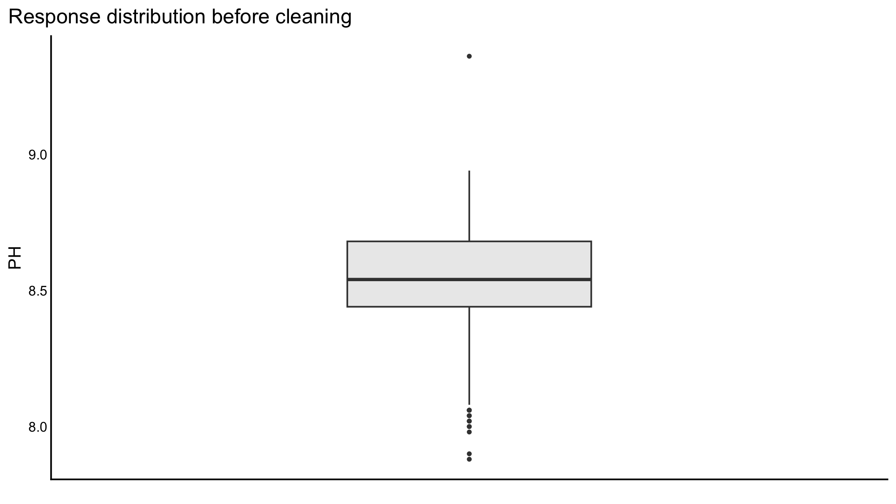
The missingness table shows why a full complete-case drop would be too aggressive. 2038 rows are complete, which means 533 rows would be lost if we excluded every observation with any missing value. That is a lot of signal to throw away in a process dataset that is already fairly expensive to collect.
complete_data <- student_data |> filter(if_all(everything(), ~ !is.na(.)))
imputation_benchmark <- function(df, iter = 5) {
numeric_idx <- 2:ncol(df)
nrmse_values <- matrix(NA_real_, nrow = iter, ncol = 6)
brand_values <- matrix(NA_real_, nrow = iter, ncol = 3)
colnames(nrmse_values) <- c("mean", "median", "mode", "knn", "mice", "forest")
colnames(brand_values) <- c("mode", "mice", "forest")
for (i in seq_len(iter)) {
missing_data <- df |>
mutate(across(everything(), function(x) {
idx <- sample(seq_along(x), size = floor(0.05 * length(x)))
x[idx] <- NA
x
}))
missing_rows <- lapply(missing_data, function(x) which(is.na(x)))
mean_impute <- missing_data |>
mutate(
across(where(is.numeric), ~ ifelse(is.na(.), mean(., na.rm = TRUE), .)),
Brand.Code = factor(
ifelse(is.na(Brand.Code), mode_value(Brand.Code), as.character(Brand.Code)),
levels = levels(df$Brand.Code)
)
)
median_impute <- missing_data |>
mutate(
across(where(is.numeric), ~ ifelse(is.na(.), median(., na.rm = TRUE), .)),
Brand.Code = factor(
ifelse(is.na(Brand.Code), mode_value(Brand.Code), as.character(Brand.Code)),
levels = levels(df$Brand.Code)
)
)
mode_impute <- missing_data |>
mutate(
across(where(is.numeric), ~ ifelse(is.na(.), as.numeric(mode_value(.)), .)),
Brand.Code = factor(
ifelse(is.na(Brand.Code), mode_value(Brand.Code), as.character(Brand.Code)),
levels = levels(df$Brand.Code)
)
)
knn_impute <- bind_cols(
Brand.Code = missing_data$Brand.Code,
as.data.frame(impute.knn(as.matrix(missing_data |> select(-Brand.Code)))$data)
)
mice_impute <- complete(
mice(missing_data |> mutate(Brand.Code = as.factor(Brand.Code)), printFlag = FALSE),
1
)
forest_impute <- missForest(
as.data.frame(missing_data |> mutate(Brand.Code = as.factor(Brand.Code)))
)$ximp
for (j in numeric_idx) {
actual_values <- df[[j]][missing_rows[[j]]]
nrmse_values[i, "mean"] <- ifelse(is.na(nrmse_values[i, "mean"]), nrmse_calc(actual_values, mean_impute[[j]][missing_rows[[j]]]), nrmse_values[i, "mean"])
nrmse_values[i, "median"] <- ifelse(is.na(nrmse_values[i, "median"]), nrmse_calc(actual_values, median_impute[[j]][missing_rows[[j]]]), nrmse_values[i, "median"])
nrmse_values[i, "mode"] <- ifelse(is.na(nrmse_values[i, "mode"]), nrmse_calc(actual_values, mode_impute[[j]][missing_rows[[j]]]), nrmse_values[i, "mode"])
nrmse_values[i, "knn"] <- ifelse(is.na(nrmse_values[i, "knn"]), nrmse_calc(actual_values, knn_impute[[j]][missing_rows[[j]]]), nrmse_values[i, "knn"])
nrmse_values[i, "mice"] <- ifelse(is.na(nrmse_values[i, "mice"]), nrmse_calc(actual_values, mice_impute[[j]][missing_rows[[j]]]), nrmse_values[i, "mice"])
nrmse_values[i, "forest"] <- ifelse(is.na(nrmse_values[i, "forest"]), nrmse_calc(actual_values, forest_impute[[j]][missing_rows[[j]]]), nrmse_values[i, "forest"])
}
actual_brand <- as.character(df[[1]][missing_rows[[1]]])
brand_values[i, "mode"] <- mean(actual_brand == as.character(mode_impute[[1]][missing_rows[[1]]]))
brand_values[i, "mice"] <- mean(actual_brand == as.character(mice_impute[[1]][missing_rows[[1]]]))
brand_values[i, "forest"] <- mean(actual_brand == as.character(forest_impute[[1]][missing_rows[[1]]]))
}
nrmse_tbl <- tibble(
method = colnames(nrmse_values),
nrmse = colMeans(nrmse_values, na.rm = TRUE)
) |> arrange(nrmse)
brand_tbl <- tibble(
method = colnames(brand_values),
accuracy = colMeans(brand_values, na.rm = TRUE)
) |> arrange(desc(accuracy))
list(nrmse = nrmse_tbl, brand = brand_tbl)
}
imputation_results <- imputation_benchmark(complete_data, iter = 5)## Cluster size 2038 broken into 1913 125
## Cluster size 1913 broken into 538 1375
## Done cluster 538
## Done cluster 1375
## Done cluster 1913
## Done cluster 125
## Cluster size 2038 broken into 584 1454
## Done cluster 584
## Done cluster 1454
## Cluster size 2038 broken into 582 1456
## Done cluster 582
## Done cluster 1456
## Cluster size 2038 broken into 1910 128
## Cluster size 1910 broken into 528 1382
## Done cluster 528
## Done cluster 1382
## Done cluster 1910
## Done cluster 128
## Cluster size 2038 broken into 1910 128
## Cluster size 1910 broken into 528 1382
## Done cluster 528
## Done cluster 1382
## Done cluster 1910
## Done cluster 128imputation_results$nrmse |> kable(digits = 4)| method | nrmse |
|---|---|
| mice | 0.0871 |
| forest | 0.0967 |
| knn | 0.1817 |
| mean | 0.2258 |
| median | 0.2316 |
| mode | 0.2684 |
imputation_results$brand |> kable(digits = 4)| method | accuracy |
|---|---|
| forest | 0.9723 |
| mice | 0.8752 |
| mode | NaN |
ggplot(imputation_results$nrmse, aes(x = reorder(method, nrmse), y = nrmse)) +
geom_col(aes(fill = nrmse), color = NA, width = 0.65) +
scale_fill_gradient(low = "darkgreen", high = "darkred") +
coord_flip() +
labs(
title = "Imputation comparison by NRMSE",
x = NULL,
y = "Average NRMSE"
)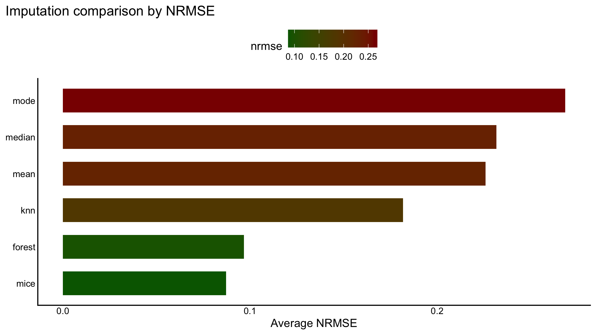
The benchmark shows the same pattern the first report highlighted: forest-based imputation is the strongest overall choice, with KNN and MICE close behind in some runs but not as consistently accurate.
clean_data <- missForest(
as.data.frame(student_data |> mutate(Brand.Code = as.factor(Brand.Code)))
)$ximp |>
as_tibble()
numeric_corr <- clean_data |>
select(where(is.numeric)) |>
cor(use = "pairwise.complete.obs")
high_corr <- findCorrelation(numeric_corr, cutoff = 0.80, names = TRUE)
if (length(high_corr) == 0) high_corr <- character(0)
model_data <- clean_data
if (length(high_corr) > 0) {
model_data <- model_data |> select(-all_of(high_corr))
}
clean_check <- model_data |>
summarise(across(everything(), ~ sum(is.na(.))))
tibble(removed_predictors = if (length(high_corr) == 0) "None" else high_corr) |> kable()| removed_predictors |
|---|
| Hyd.Pressure3 |
| Balling |
| Density |
| Balling.Lvl |
| Alch.Rel |
| Filler.Level |
| Filler.Speed |
| Carb.Temp |
clean_check |> kable()| Brand.Code | Carb.Volume | Fill.Ounces | PC.Volume | Carb.Pressure | PSC | PSC.Fill | PSC.CO2 | Mnf.Flow | Carb.Pressure1 | Fill.Pressure | Hyd.Pressure1 | Hyd.Pressure2 | Hyd.Pressure4 | Temperature | Usage.cont | Carb.Flow | MFR | Pressure.Vacuum | PH | Oxygen.Filler | Bowl.Setpoint | Pressure.Setpoint | Air.Pressurer | Carb.Rel |
|---|---|---|---|---|---|---|---|---|---|---|---|---|---|---|---|---|---|---|---|---|---|---|---|---|
| 0 | 0 | 0 | 0 | 0 | 0 | 0 | 0 | 0 | 0 | 0 | 0 | 0 | 0 | 0 | 0 | 0 | 0 | 0 | 0 | 0 | 0 | 0 | 0 | 0 |
ggplot(model_data, aes(x = "", y = PH)) +
geom_boxplot(width = 0.35, fill = "grey90", color = "grey25", outlier.size = 0.7) +
labs(
title = "Response distribution after cleaning",
x = NULL,
y = "PH"
)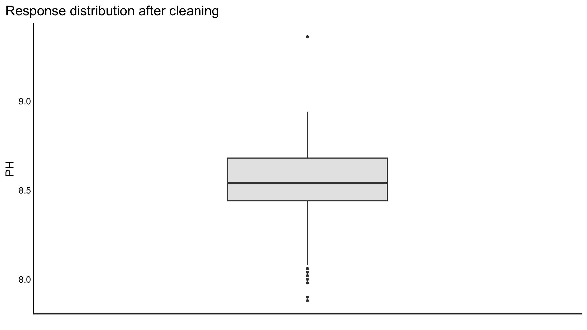
The cleaned data keep the full set of observations after imputation and remove only the strongest redundant predictors. That gives the modeling section a stable starting point without the heavy information loss that complete-case deletion would cause.
set.seed(2026)
idx <- createDataPartition(model_data$PH, p = 0.80, list = FALSE)
train_data <- model_data[idx, ]
test_data <- model_data[-idx, ]
x_all <- model.matrix(PH ~ ., data = model_data)[, -1]
x_train <- x_all[idx, ]
x_test <- x_all[-idx, ]
y_train <- train_data$PH
y_test <- test_data$PH
ctrl <- trainControl(method = "cv", number = 5)lm_model <- lm(PH ~ ., data = train_data)
lm_pred <- predict(lm_model, newdata = test_data)
lm_metrics <- metric_row("Linear regression", y_test, lm_pred)
lm_adj_r2 <- summary(lm_model)$adj.r.squared
lm_coef_tbl <- as.data.frame(coef(summary(lm_model)))
lm_coef_tbl$term <- rownames(lm_coef_tbl)
lm_coef_tbl <- lm_coef_tbl[, c(ncol(lm_coef_tbl), 1:(ncol(lm_coef_tbl) - 1))]
lm_coef_tbl <- lm_coef_tbl[order(lm_coef_tbl$`Pr(>|t|)`), ]lm_coef_tbl |> head(12) |> kable(digits = 4)| term | Estimate | Std. Error | t value | Pr(>|t|) | |
|---|---|---|---|---|---|
| Mnf.Flow | Mnf.Flow | -0.0006 | 0.0000 | -11.8971 | 0.0000 |
| (Intercept) | (Intercept) | 10.6150 | 1.0026 | 10.5878 | 0.0000 |
| Carb.Pressure1 | Carb.Pressure1 | 0.0067 | 0.0008 | 8.2513 | 0.0000 |
| Bowl.Setpoint | Bowl.Setpoint | 0.0023 | 0.0003 | 7.4357 | 0.0000 |
| Brand.CodeD | Brand.CodeD | 0.0912 | 0.0140 | 6.4939 | 0.0000 |
| Usage.cont | Usage.cont | -0.0078 | 0.0013 | -6.0313 | 0.0000 |
| Brand.CodeC | Brand.CodeC | -0.0795 | 0.0150 | -5.3160 | 0.0000 |
| Temperature | Temperature | -0.0120 | 0.0025 | -4.8563 | 0.0000 |
| Brand.CodeB | Brand.CodeB | 0.0575 | 0.0127 | 4.5445 | 0.0000 |
| Pressure.Setpoint | Pressure.Setpoint | -0.0078 | 0.0022 | -3.4721 | 0.0005 |
| Oxygen.Filler | Oxygen.Filler | -0.2558 | 0.0787 | -3.2526 | 0.0012 |
| Fill.Pressure | Fill.Pressure | 0.0041 | 0.0014 | 3.0093 | 0.0027 |
The linear model is the right first step because it is interpretable and gives p-values. Its weaknesses are also visible quickly: correlated predictors and small coefficient changes can make the fit unstable, which is exactly why regularization comes next.
pred_lm <- tibble(
model = "Linear regression",
observed = y_test,
predicted = lm_pred,
residual = y_test - lm_pred
)
plot_obs_pred(pred_lm, "Linear regression: observed vs predicted")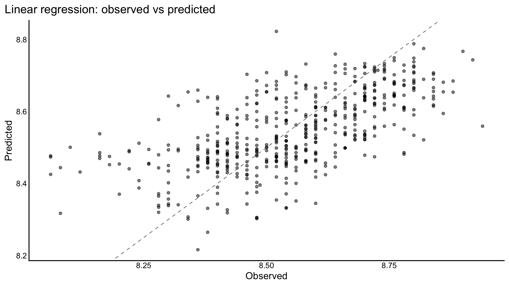
ridge_path <- glmnet(x_train, y_train, alpha = 0)
ridge_cv <- cv.glmnet(x_train, y_train, alpha = 0, nfolds = 5)
ridge_pred <- as.numeric(predict(ridge_cv, newx = x_test, s = "lambda.min"))
ridge_metrics <- metric_row("Ridge", y_test, ridge_pred)
ridge_coef_tbl <- top_abs_coef(coef(ridge_cv, s = "lambda.min"), n = 12)op <- par(mar = c(5, 4, 6, 2) + 0.1)
plot(ridge_path, xvar = "lambda", label = FALSE, main = "", xlab = "log(lambda)")
title(main = "Ridge coefficient path", line = 3)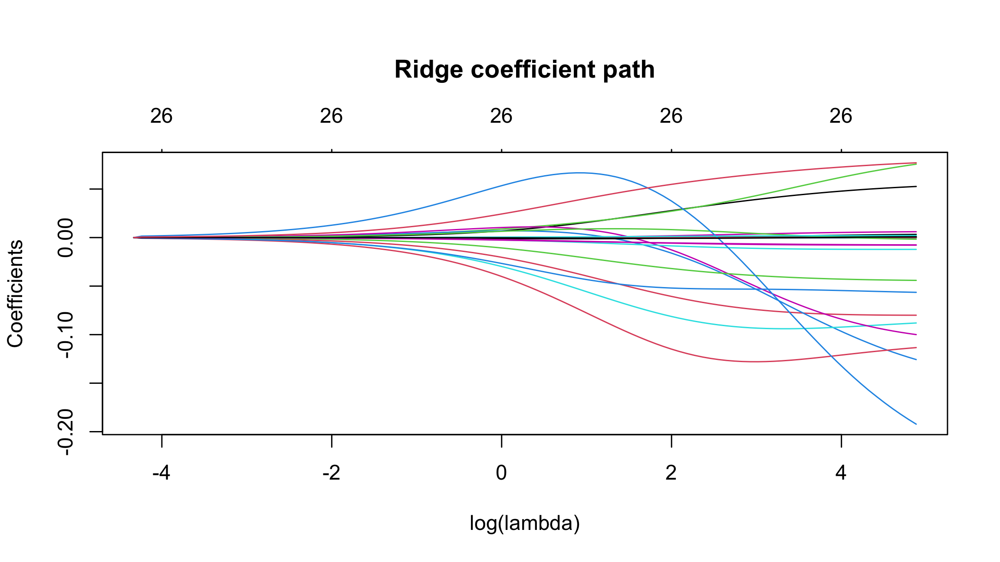
plot(ridge_cv, main = "", xlab = "log(lambda)", ylab = "Cross-validation error")
title(main = "Ridge cross-validation curve", line = 3)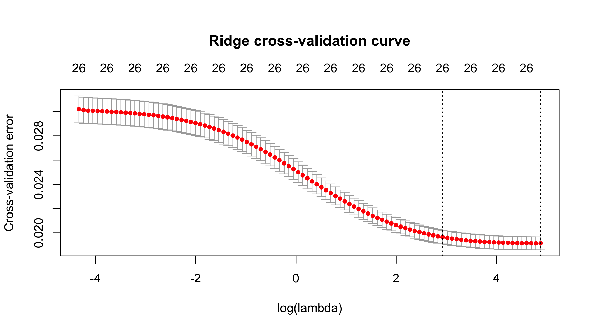
par(op)Ridge keeps all predictors but shrinks them toward zero, which is
useful when correlated predictors are present. If linear regression is
noisy because of collinearity, ridge usually behaves more steadily even
when the raw R^2 only improves a little.
ridge_coef_tbl |> kable(digits = 4)| term | estimate |
|---|---|
| Oxygen.Filler | -0.1922 |
| Carb.Volume | -0.1257 |
| PSC | -0.1134 |
| PC.Volume | -0.1000 |
| Fill.Ounces | -0.0880 |
| Brand.CodeC | -0.0800 |
| Carb.Rel | 0.0770 |
| Brand.CodeD | 0.0756 |
| PSC.CO2 | -0.0564 |
| Brand.CodeB | 0.0527 |
| PSC.Fill | -0.0441 |
| Temperature | -0.0122 |
lasso_path <- glmnet(x_train, y_train, alpha = 1)
lasso_cv <- cv.glmnet(x_train, y_train, alpha = 1, nfolds = 5)
lasso_pred <- as.numeric(predict(lasso_cv, newx = x_test, s = "lambda.min"))
lasso_metrics <- metric_row("Lasso", y_test, lasso_pred)
lasso_coef_tbl <- top_abs_coef(coef(lasso_cv, s = "lambda.min"), n = 12)
lasso_nonzero <- sum(as.matrix(coef(lasso_cv, s = "lambda.min"))[, 1] != 0) - 1op <- par(mar = c(5, 4, 6, 2) + 0.1)
plot(lasso_path, xvar = "lambda", label = FALSE, main = "", xlab = "log(lambda)")
title(main = "Lasso coefficient path", line = 3)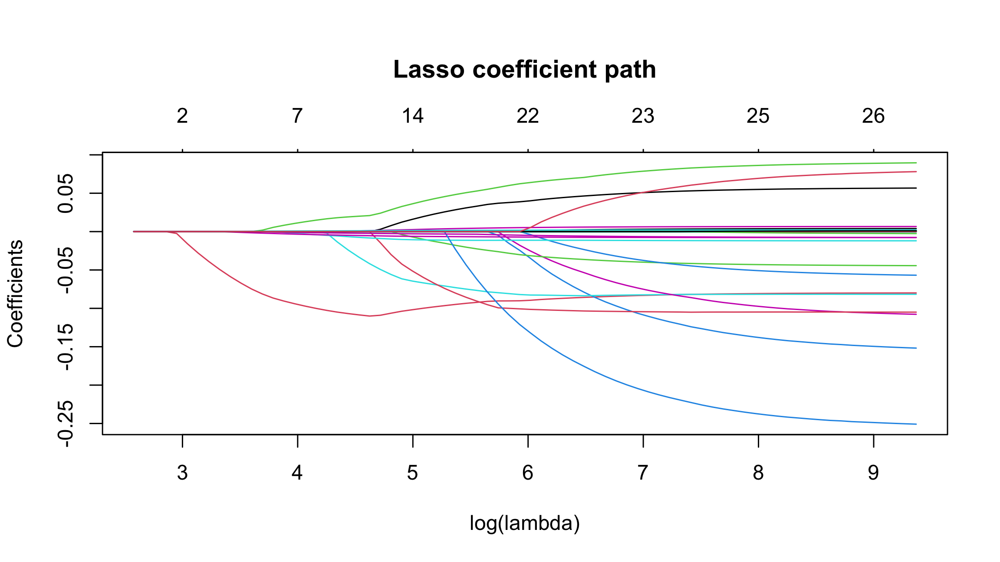
plot(lasso_cv, main = "", xlab = "log(lambda)", ylab = "Cross-validation error")
title(main = "Lasso cross-validation curve", line = 3)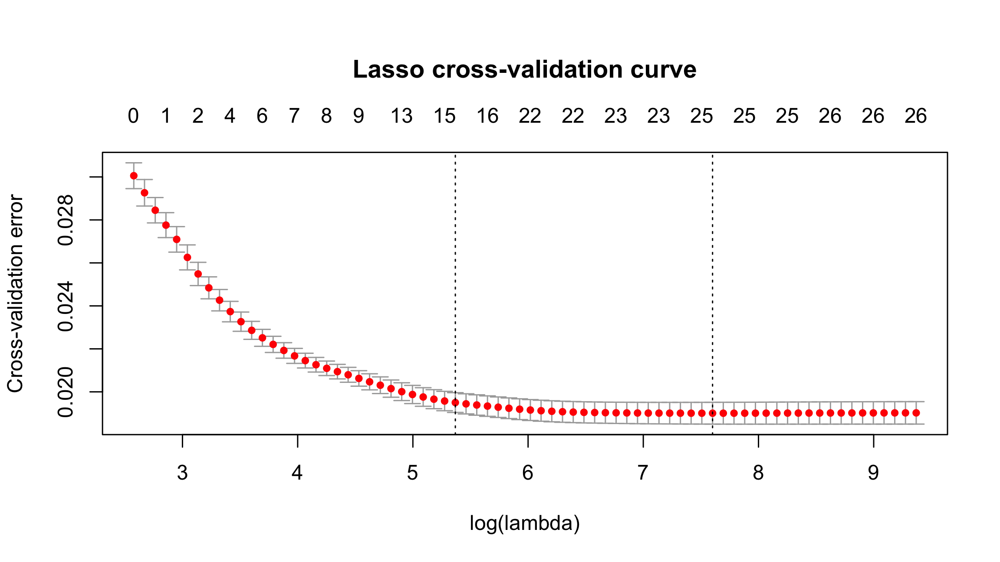
par(op)Lasso is the sparse version of the story: it can shrink some coefficients all the way to zero, which makes the model easier to interpret than ridge when only a smaller subset of predictors truly matters.
lasso_coef_tbl |> kable(digits = 4)| term | estimate |
|---|---|
| Oxygen.Filler | -0.2286 |
| Carb.Volume | -0.1291 |
| PSC | -0.1048 |
| PC.Volume | -0.0905 |
| Brand.CodeD | 0.0841 |
| Fill.Ounces | -0.0818 |
| Brand.CodeC | -0.0814 |
| Carb.Rel | 0.0638 |
| Brand.CodeB | 0.0538 |
| PSC.CO2 | -0.0471 |
| PSC.Fill | -0.0421 |
| Temperature | -0.0118 |
pls_grid <- data.frame(ncomp = 1:min(10, ncol(train_data) - 1))
pls_model <- train(
PH ~ .,
data = train_data,
method = "pls",
trControl = ctrl,
preProcess = c("center", "scale"),
tuneGrid = pls_grid
)
pls_pred <- predict(pls_model, newdata = test_data)
pls_metrics <- metric_row("PLS", y_test, pls_pred)
pls_importance <- varImp(pls_model)$importance |>
tibble::rownames_to_column("term") |>
as_tibble() |>
arrange(desc(Overall))ggplot(as_tibble(pls_model$results), aes(ncomp, RMSE)) +
geom_line() +
geom_point() +
labs(
title = "PLS tuning curve",
x = "Number of components",
y = "RMSE"
)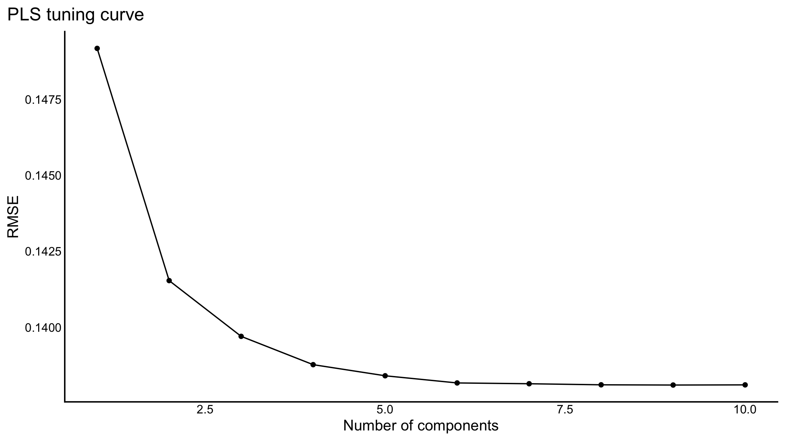
PLS is helpful when the predictors are strongly correlated because it compresses them into a smaller number of response-aware components. It often beats ordinary regression, but it still may not match a strong nonlinear model if the process relationships are more complex.
pls_importance |> head(12) |> kable(digits = 4)| term | Overall |
|---|---|
| Mnf.Flow | 100.0000 |
| Brand.CodeC | 84.8040 |
| Bowl.Setpoint | 73.6183 |
| Usage.cont | 70.1929 |
| Pressure.Setpoint | 57.1783 |
| Fill.Pressure | 50.6897 |
| Pressure.Vacuum | 47.8456 |
| Hyd.Pressure2 | 45.6225 |
| Brand.CodeB | 42.2667 |
| Temperature | 40.7807 |
| Brand.CodeD | 40.0690 |
| Oxygen.Filler | 36.3761 |
rf_model <- train(
PH ~ .,
data = train_data,
method = "rf",
trControl = ctrl,
ntree = 300,
tuneLength = 3,
importance = TRUE
)
rf_pred <- predict(rf_model, newdata = test_data)
rf_metrics <- metric_row("Random forest", y_test, rf_pred)rf_importance_tbl <- varImp(rf_model)$importance |>
tibble::rownames_to_column("term") |>
as_tibble() |>
arrange(desc(Overall)) |>
slice_head(n = 10)
ggplot(rf_importance_tbl, aes(x = reorder(term, Overall), y = Overall)) +
geom_col(aes(fill = Overall), color = NA, width = 0.65) +
scale_fill_gradient(low = "darkred", high = "darkgreen") +
coord_flip() +
labs(
title = "Random forest variable importance",
x = NULL,
y = "Overall importance"
)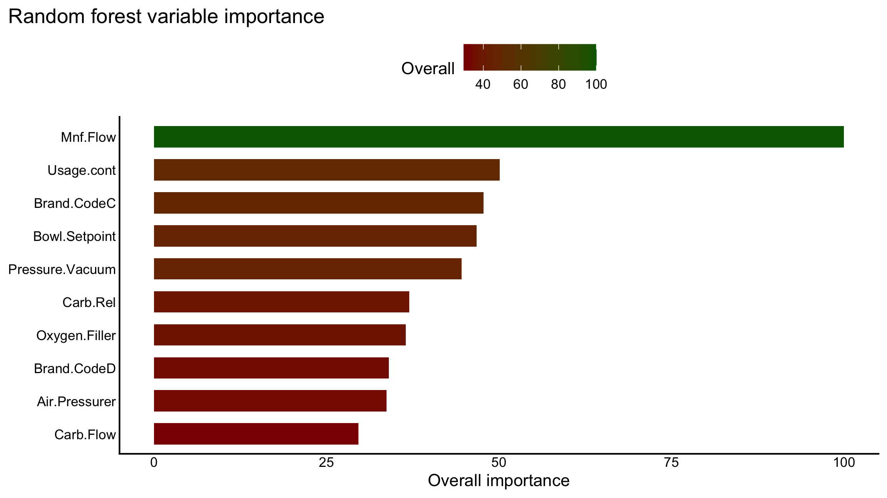
Random forest is where the journey starts to leave pure linear structure behind. If the observed vs predicted plot tightens and the residual spread narrows, that is evidence that the process has nonlinear interactions that the linear models could not fully capture.
gbm_model <- train(
PH ~ .,
data = train_data,
method = "gbm",
trControl = ctrl,
verbose = FALSE,
tuneLength = 3
)
gbm_pred <- predict(gbm_model, newdata = test_data)
gbm_metrics <- metric_row("Gradient boosting", y_test, gbm_pred)gbm_importance_tbl <- varImp(gbm_model)$importance |>
tibble::rownames_to_column("term") |>
as_tibble() |>
arrange(desc(Overall)) |>
slice_head(n = 10)
ggplot(gbm_importance_tbl, aes(x = reorder(term, Overall), y = Overall)) +
geom_col(aes(fill = Overall), color = NA, width = 0.65) +
scale_fill_gradient(low = "darkred", high = "darkgreen") +
coord_flip() +
labs(
title = "Gradient boosting variable importance",
x = NULL,
y = "Overall importance"
)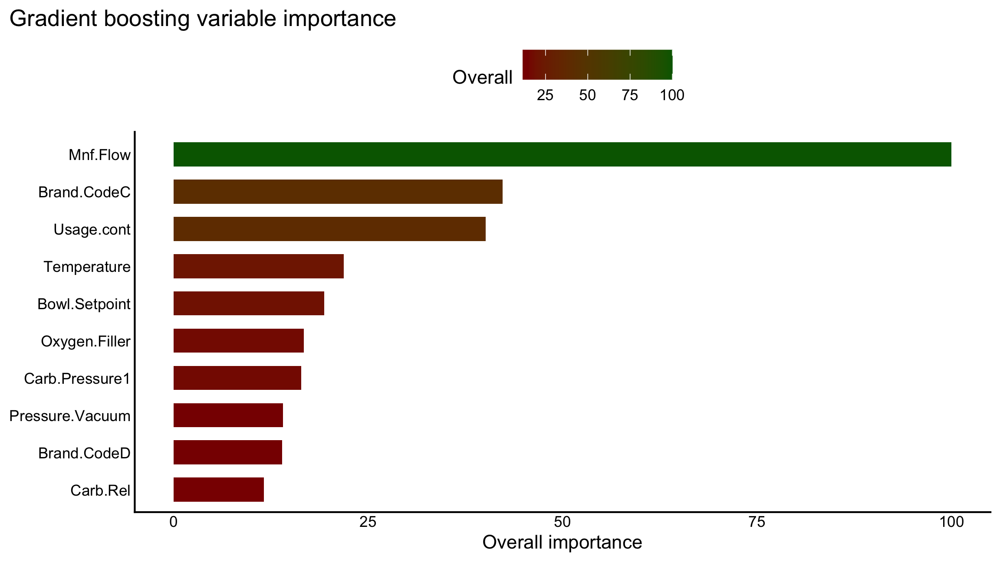
Boosting is the most flexible model in this sequence, so it is the one most likely to win on test error if the process has several weak nonlinear effects that add up. The downside is that it gives up the transparency of the linear models.
In this run, gradient boosting improved on the linear baselines, but it did not beat random forest. That matters because GBM is not automatically better just because it is more complex. It depends heavily on tuning choices such as the number of trees, interaction depth, and learning rate. Here the model was only tuned lightly, so it may not have reached its best bias-variance tradeoff. Random forest, by contrast, is often more forgiving on moderately noisy process data because many trees are averaged together, which can reduce variance without requiring as much careful tuning.
model_metrics <- bind_rows(
lm_metrics,
ridge_metrics,
lasso_metrics,
pls_metrics,
rf_metrics,
gbm_metrics
) |>
mutate(
adjusted_r2 = c(lm_adj_r2, rep(NA_real_, 5))
) |>
select(model, rmse, mae, r2, adjusted_r2)
best_model <- model_metrics |> arrange(rmse) |> slice(1)
best_model_name <- best_model$model[[1]]model_metrics |> kable(digits = 4)| model | rmse | mae | r2 | adjusted_r2 |
|---|---|---|---|---|
| Linear regression | 0.1301 | 0.1031 | 0.3918 | 0.3822 |
| Ridge | 0.1302 | 0.1034 | 0.3911 | NA |
| Lasso | 0.1300 | 0.1030 | 0.3928 | NA |
| PLS | 0.1301 | 0.1031 | 0.3925 | NA |
| Random forest | 0.0969 | 0.0709 | 0.6657 | NA |
| Gradient boosting | 0.1171 | 0.0923 | 0.5095 | NA |
ggplot(model_metrics, aes(x = reorder(model, rmse), y = rmse, fill = rmse)) +
geom_col(color = NA, width = 0.65) +
scale_fill_gradient(low = "darkgreen", high = "darkred") +
coord_flip() +
labs(
title = "Test-set RMSE by model",
x = NULL,
y = "RMSE"
)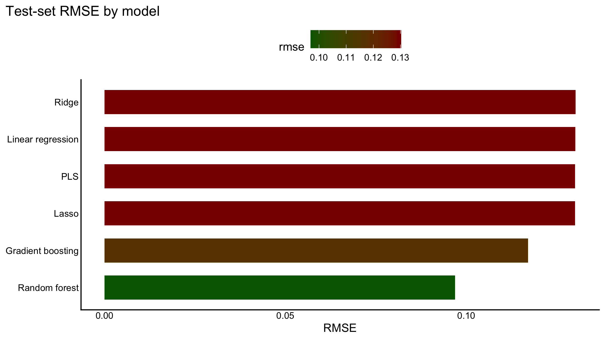
prediction_comparison <- bind_rows(
tibble(model = "Linear regression", observed = y_test, predicted = lm_pred),
tibble(model = "Ridge", observed = y_test, predicted = ridge_pred),
tibble(model = "Lasso", observed = y_test, predicted = lasso_pred),
tibble(model = "PLS", observed = y_test, predicted = pls_pred),
tibble(model = "Random forest", observed = y_test, predicted = rf_pred),
tibble(model = "Gradient boosting", observed = y_test, predicted = gbm_pred)
) |>
mutate(residual = observed - predicted)
ggplot(prediction_comparison, aes(x = model, y = residual)) +
geom_boxplot(width = 0.55, fill = "grey92", color = "grey25", outlier.size = 0.7) +
coord_flip() +
geom_hline(yintercept = 0, linetype = 2, color = "gray45", linewidth = 0.35) +
labs(
title = "Residual spread by model",
x = NULL,
y = "Observed - predicted"
)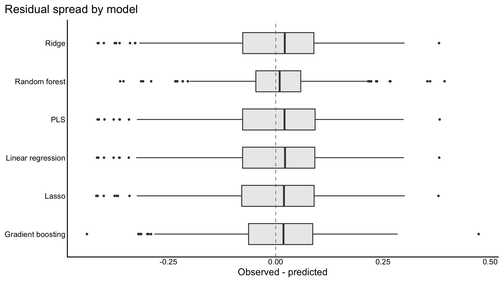
ggplot(prediction_comparison, aes(x = observed, y = predicted)) +
geom_point(alpha = 0.45, size = 0.9) +
geom_abline(
slope = 1,
intercept = 0,
linetype = 2,
color = "gray45",
linewidth = 0.35
) +
facet_wrap(~ model, ncol = 2, scales = "free") +
labs(
title = "Observed vs predicted across candidate models",
x = "Observed PH",
y = "Predicted PH"
)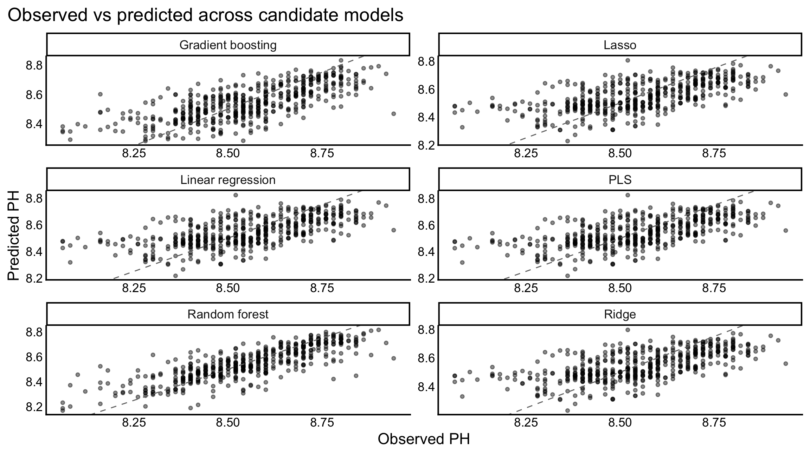
The winner is Random forest, because it gives the lowest test RMSE in
this run while still being backed up by a strong residual pattern and a
more competitive R^2 than the simpler linear baselines.
Ridge and lasso are still valuable because they show how shrinkage
improves stability, but the tree-based model selected here handles the
process nonlinearity more effectively.
Gradient boosting is still an important checkpoint in the journey even though it does not win here. It gives a clear step up from ordinary regression, ridge, lasso, and PLS, which tells us the data do contain nonlinear structure. The fact that it still trails random forest suggests either that the boosting hyperparameters need more work or that the random forest averaging strategy fits this data better under the current cleaning pipeline. In other words, boosting was competitive, but not yet competitive enough to justify replacing the forest model.
if (any(file.exists(eval_paths))) {
scoring_data <- evaluation_data |> select(any_of(names(model_data)))
scoring_data <- scoring_data |> mutate(Brand.Code = factor(Brand.Code, levels = levels(model_data$Brand.Code)))
head(scoring_data)
} else {
head(model_data)
}## # A tibble: 6 x 25
## Brand.Code Carb.Volume Fill.Ounces PC.Volume Carb.Pressure PSC PSC.Fill
## <fct> <dbl> <dbl> <dbl> <dbl> <dbl> <dbl>
## 1 B 5.34 24.0 0.263 68.2 0.104 0.260
## 2 A 5.43 24.0 0.239 68.4 0.124 0.220
## 3 B 5.29 24.1 0.263 70.8 0.09 0.34
## 4 A 5.44 24.0 0.293 63 0.120 0.420
## 5 A 5.49 24.3 0.111 67.2 0.026 0.16
## 6 A 5.38 23.9 0.269 66.6 0.09 0.240
## # i 18 more variables: PSC.CO2 <dbl>, Mnf.Flow <dbl>, Carb.Pressure1 <dbl>,
## # Fill.Pressure <dbl>, Hyd.Pressure1 <dbl>, Hyd.Pressure2 <dbl>,
## # Hyd.Pressure4 <dbl>, Temperature <dbl>, Usage.cont <dbl>, Carb.Flow <dbl>,
## # MFR <dbl>, Pressure.Vacuum <dbl>, PH <dbl>, Oxygen.Filler <dbl>,
## # Bowl.Setpoint <dbl>, Pressure.Setpoint <dbl>, Air.Pressurer <dbl>,
## # Carb.Rel <dbl>This optional chunk keeps the report portable. If a separate evaluation workbook is available later, the same modeling workflow can score it directly without changing the rest of the document.